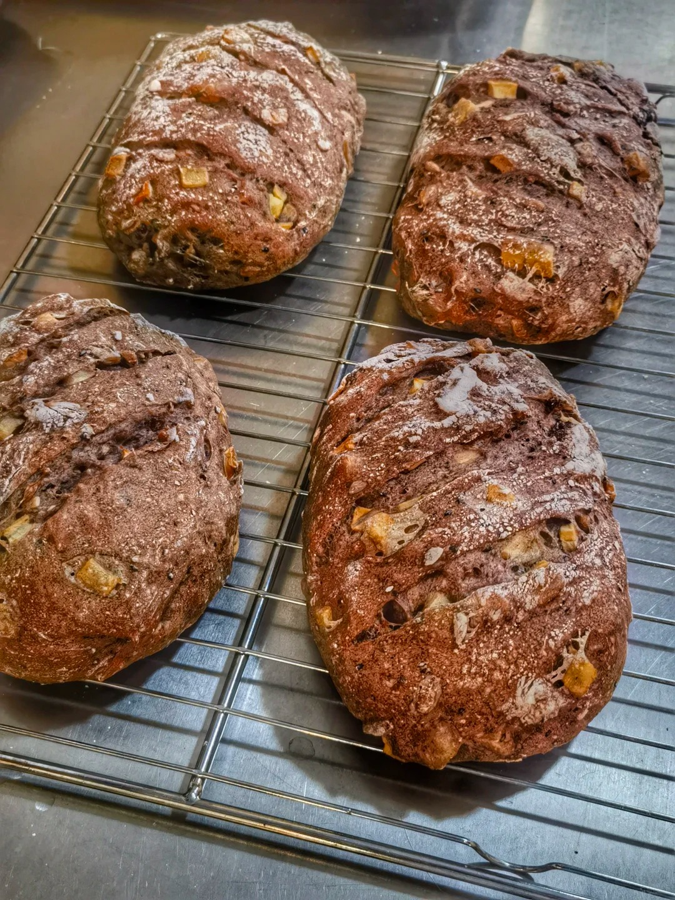
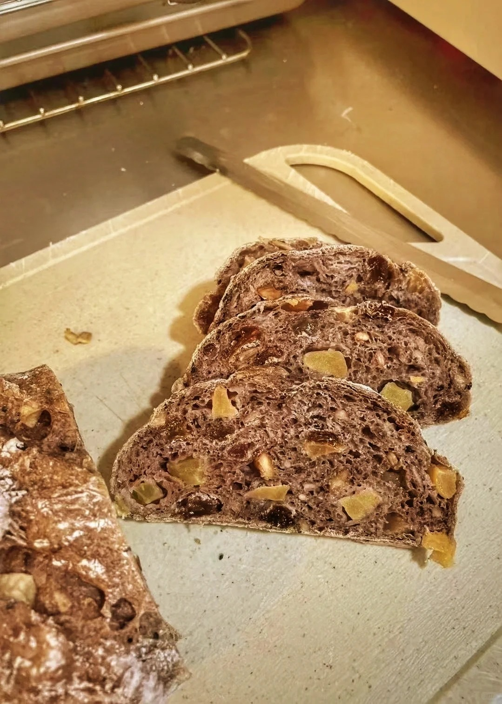
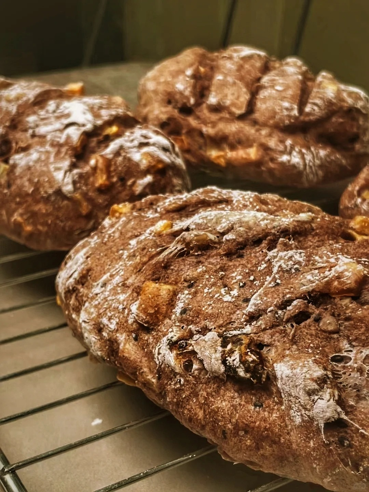

黑麦面包



黑麦面包是以黑麦面粉为主要原料制成的面包，采用酸性发酵工艺制成，具有独特香味与湿润质地。其起源于德国，公元6世纪经丹麦人传入英国，在北欧及东欧地区成为主食品种。黑麦面包含有较多膳食纤维和铁元素，因面筋含量低导致结构紧密且消化缓慢。制作时需添加高筋小麦粉改善结构，传统工艺包含酵头培养、长时间揉面及高温烘焙。现代研究表明添加真菌漆酶可增强面团水结合能力，通过改变蛋白质二级结构优化网络稳定性。响应面法优化的配方中添加25.50%乳酸发酵酸面团、43.70%水和9.70%赤藓糖醇，使成品体外预测血糖生成指数（eGI）降至49.98，感官评分达90.23。贮存7天后质构特性显示弹性增长66.37%，风味特征主要体现在醇类和芳香族化合物。